About Me
Hi, my name is George Pentchev!
I’m a fourth-year undergraduate student at the University of Waterloo, double majoring in Pure Mathematics and Statistics. I’m based in Oakville, ON, Canada and currently employed at TD Bank. I like composing, writing, drawing, graphic design, crocheting, coding, and probably more that I’m forgetting. I feel like I have a lot of interests, and that’s actually my biggest reason for making this site: I wanted a place where I could just put everything.
That said, this site is home to primarily two things, the first being my catalogue of music. I don’t upload everything I compose, and what I do upload is often to different platforms depending on the type of work. This website helps me keep it all in one place. The second thing is my blog. I have lots of ideas but getting published is hard work, which I’m allergic to. I could publish to existing sites like Medium or Tumblr, but I think something important is lost when posting to a platform that isn’t your own.
Companies like Smosh and CollegeHumor used to have their own websites where they would share their content, but they both eventually migrated to YouTube (though CH has since rebranded and gone back to releasing on their own platform). Nowadays, if someone wants outreach, they have no other recourse but to post on TikTok, Instagram, or one of the other few members of the current digital oligopoly. I don’t care about outreach—for me, complete creative control is more important, even if most of my pages are only a few lines of CSS away from plaintext.

